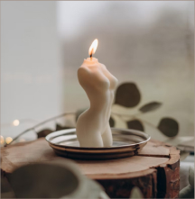

<section class="about">
  <div class="container about__wrap">
    <div class="about__content">
      <h2 class="about__title">Про нас</h2>
      <p class="about__text">Богдан создатель бренда всегда заинтересован в изготовлении разнообразных вещей на дому. Он регулярно экспериментировал с разными материалами и инструментами, попробовав свои силы во многих отраслях, включая изготовление свечей.</p>
      <p class="about__text">Сосовый воск изготавливается из соевых бобов, сращиваемых в Дании, и этот вид воска является экологически чистым и безопасным для здоровья.</p>
    </div>
  <ul class="about__list">
    <li class="about__item">
      
      <p class="about__item-text">Наслаждайтесь моментом</p>
    </li>
    <li class="about__item">
      
      <p class="about__item-text">Создайте любимую атмосферу</p>
    </li>
    <li class="about__item">
      
      <p class="about__item-text">Изготовлены с любовью</p>
    </li>
  </ul>
  </div>
</section>